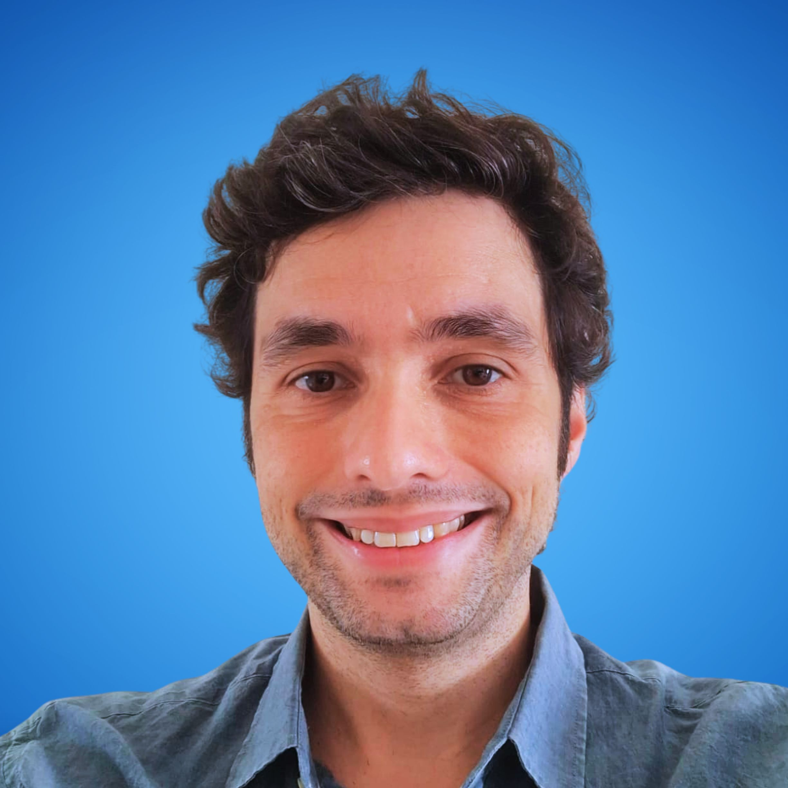
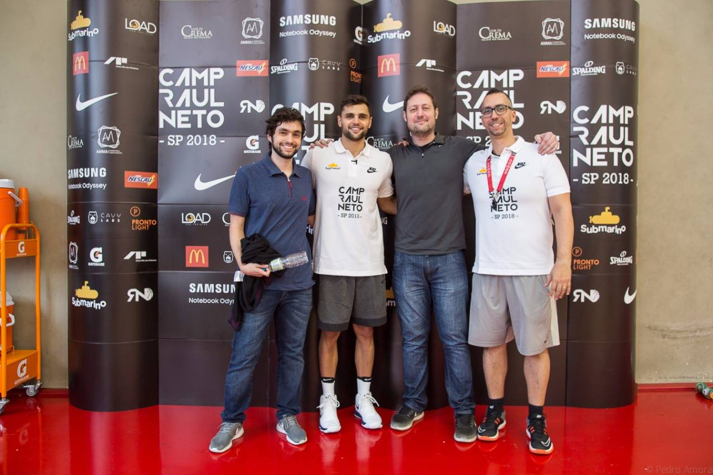
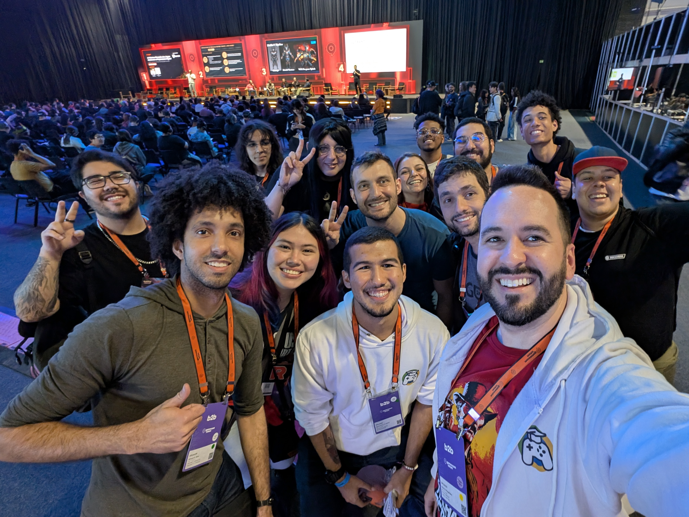

Founder, Technical Leader & Product Builder
Technical founder and game industry leader building products, studios, and teams.
I build and lead digital products across games, apps, AR/XR, chatbots, and cross-platform technology, combining hands-on engineering experience with studio leadership, business development, and community work.
- 20+ years Technology, games, and product execution
- 50+ projects Delivered through Cavylabs
- Since 2024 Speaker and panelist at Gamescom Latam
Co-founder at Cavylabs & MadCat | Mentor at Mentorias Games Brasil

Technical background. Founder mindset. Industry presence.
I'm a Brazilian founder, technical leader, and product builder with over 20 years of experience in software, games, apps, AR/XR, chatbots, and cross-platform development.
My career started hands-on, building digital products as a developer. That technical foundation later became the base for my work as co-founder and Studio Head at Cavylabs, where I lead teams, projects, partnerships, porting initiatives, and original IP development.
Before Cavylabs became my full-time focus, I spent years working across software, apps, games, mobile, and web projects, including global technical work connected to ITU/Toptal. During that period, I started building Cavylabs in parallel, gradually turning it from an independent initiative into a professional studio.
That transition shaped the way I lead today, with technical depth, respect for execution, and a practical understanding of what it takes to ship real products.
Selected Work
Products, studios, and technical delivery across platforms.

Areas of Expertise
Where technical execution meets leadership and product thinking.
Ecosystem & Leadership
Industry presence beyond studio delivery.
Beyond studio work, I participate in initiatives that help strengthen the Brazilian games ecosystem, from public talks and panels to mentorship and founder support.

Career Timeline